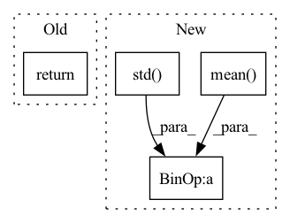

Pattern ID :24110
Before Change
time2 = 0
times = np.array([time1, time2]).reshape(1, 2)
T_21 = get_groundtruth_odometry(time1, self.data_dir + seq + "/gt/radar_odometry.csv")
return {"data": cart, "T_21": T_21, "times": times, "mask": mask}
def get_dataloaders(config):
Retrieves train, validation, and test data loaders.After Change
_, azimuths, _, polar, _ = load_radar(frame)
cart = radar_polar_to_cartesian(azimuths, polar, self.config["radar_resolution"],
self.config["cart_resolution"], self.config["cart_pixel_width"]) // 1 x H x W
data = (cart - cart.mean() ) / (cart.std() + 1e-8)
polar_mask = mean_intensity_mask(polar, self.mean_int_mask_mult)
mask = radar_polar_to_cartesian(azimuths, polar_mask, self.config["radar_resolution"],
self.config["cart_resolution"],In pattern: SUPERPATTERN
Frequency: 3
Non-data size: 4
Instances Fragment ID: 74816669
Project Name: utiasasrl/hero_radar_odometry
Commit Name: 88f90887ac382cc0b0e24d5923eb94bc3fedb5f3
Time: 2021-02-13
Author: keenburn2004@gmail.com
File Name: datasets/oxford.py
M Class Name: OxfordDataset
N Class Name: OxfordDataset
M Method Name: __getitem__(2)
N Method Name: __getitem__(2)
M Parent Class: Dataset
N Parent Class: Dataset
M File Name: datasets/oxford.py
N File Name: datasets/oxford.py
M Start Line: 139
M End Line: 154
N Start Line: 139
N End Line: 155
Before Change
par.generate()
analysis_df = par.load(par.get_path("port_analysis.pkl"))
print(analysis_df)
return analysis_df
class TestAllFlow(TestAutoData):After Change
gap_between_next_trade -= 1
alphas = np.array(alphas)
sharpe_ratio = alphas.mean() / np.std( alphas)
print("Sharpe:", sharpe_ratio)
return sharpe_ratio
Fragment ID: 74816670
Project Name: microsoft/qlib
Commit Name: 2bff6eb78120b8f3fc7aac12267d1e37c847ae0f
Time: 2021-03-04
Author: cy@unitive.tech
File Name: tests/test_enhanced_indexing.py
M Class Name: AnonimousClass
N Class Name: AnonimousClass
M Method Name: backtest_analysis(1)
N Method Name: backtest_analysis(2)
M Parent Class:
N Parent Class:
M File Name: tests/test_enhanced_indexing.py
N File Name: tests/test_enhanced_indexing.py
M Start Line: 136
M End Line: 158
N Start Line: 226
N End Line: 248
Before Change
x_std[i, :] = x[i, :, :].std(dim=1)
// make sure x_std is not zero
x_std += self.div_guard
return (x - x_mean.unsqueeze(2)) / x_std.unsqueeze(2)
class DitherAudio(nn.Module):After Change
self.div_guard = 1e-5
def forward(self, x: torch.Tensor) -> torch.Tensor:
x_mean = x.mean(dim=2, keepdim=True) .detach()
x_std = x.std(dim=2, keepdim=True) .detach()
// make sure x_std is not zero
x_std += self.div_guard
return (x - x_mean) / x_std
class DitherAudio(nn.Module): Fragment ID: 74816667
Project Name: scart97/thunder-speech
Commit Name: 868b3d50886a7e0d85f988328f18e7c60aa81bab
Time: 2021-02-24
Author: scart.lucas@gmail.com
File Name: src/thunder/quartznet/preprocess.py
M Class Name: FeatureBatchNormalizer
N Class Name: FeatureBatchNormalizer
M Method Name: forward(2)
N Method Name: forward(2)
M Parent Class: nn.Module
N Parent Class: nn.Module
M File Name: src/thunder/quartznet/preprocess.py
N File Name: src/thunder/quartznet/preprocess.py
M Start Line: 54
M End Line: 68
N Start Line: 54
N End Line: 59